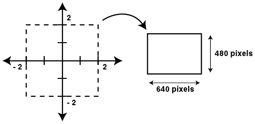

The mapping section establishes two things:
The general form of the mapping section is as follows:
mapping
{
( real_start, imaginary_start, real_end, imaginary_end ) =>
( x_pixels, y_pixels )
}
Here is a typical example and a diagram that graphically shows the meaning of the mapping:
mapping
{
(-2, -2, 2, 2) => (640, 480)
}

Some points worth noting in the above example:
But this is not a requirement. You can reverse your image horizontally by swapping the first and third (real) values, you can invert your image vertically by swapping the second and fourth (imaginary) values.
Another useful feature is the ability to specify values using mathematical expressions, rather than just numbers. As an example, suppose you have created an image whose mapping section looks like this:
mapping
{
(-0.41386029741100522000,
-1.42541871282411380000,
1.98659894437602790000,
1.41319953487773910000) => (417, 346)
}
If you decided you wanted to create a larger version of the image (the size in pixels, not the selected region) you can double its width and height by doing:
mapping
{
(-0.41386029741100522000,
-1.42541871282411380000,
1.98659894437602790000,
1.41319953487773910000) => (417 * 2, 346 * 2)
}
In practice, this is a very useful feature. You can use any expression you like that involves:
The only restrictions are that the sizes in pixels must work out to be a number > 0 for both width and height. Here is an example demonstrating the use of more complicated expressions:
mapping
{
(2 - 4, 3 - 5, (.25 + .25) * 4, 6 / 3) =>
((1 + 2 + 3 + 4) * 64, 2 * 2 * 120)
}
Of course the above example just works out to be our original example (after evaluating the expressions)
mapping
{
(-2, -2, 2, 2) => (640, 480)
}
But it does demonstrate the range of possibilities available for specifying the region and pixel values.